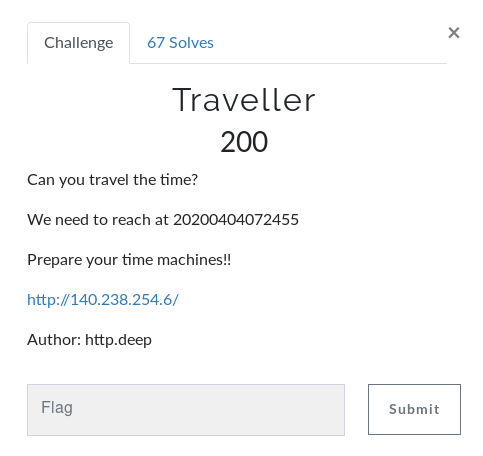
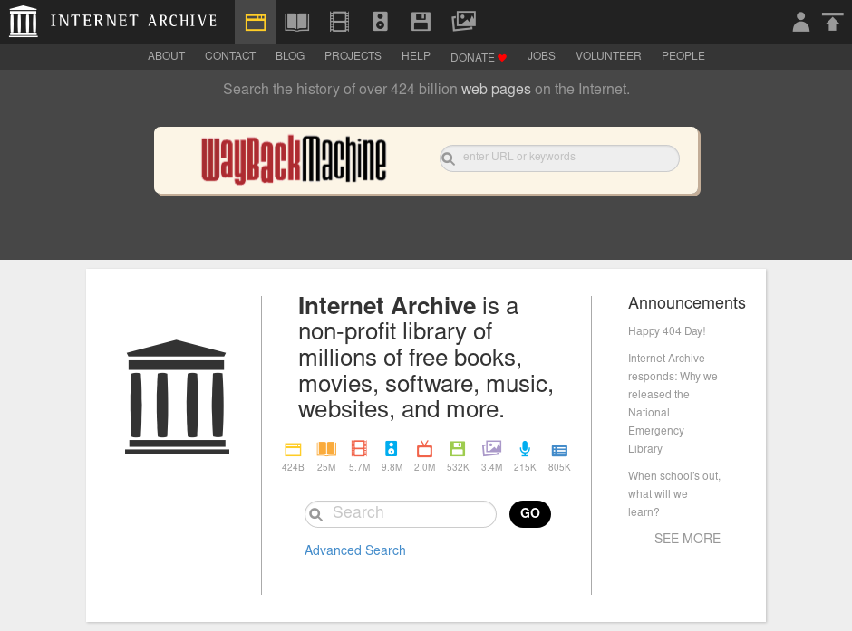
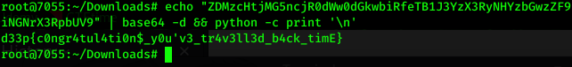

Traveller
As for most of you have guessed this challenge very easily...
The WAYBACKMACHINE or The InternetArchive

For those who don't know what this site is...
Internet Archive is a collection of previous versions of almost all the sites... ( Not all, because either for backup many big companies store the previous versions of their websites... In order to maintain their changelogs. But not all ). And the good thing is it is freely available to us to view and check out (maybe some useful credentials) what are the changes they have recently made...
Now back to the chall...
so what we gotta do here is append the url with the given info...
1) 20200404072455
2) http://140.238.254.6/
And after that it will look like this...
https://web.archive.org/web/20200404072455/http://140.238.254.6/
Extra: If you wonder what this rubbish no. is given i.e. 20200404072455
I'll break it for you... 2020.04.04.072455
Hope you get it now... where this last octet in the the serial is the site number usually which given to each site that is stored on that date...
Now after visiting the above link we will get this text written...
How you doing?
Here's your
flag:ZDMzcHtjMG5ncjR0dWw0dGkwbiRfeTB1J3YzX3RyNHYzbGwzZF9iNGNrX3RpbUV9
And here we have a base64 string lets decode it...

and here we have our flag...
flag: d33p{c0ngr4tul4ti0n$_y0u'v3_tr4v3ll3d_b4ck_timE}